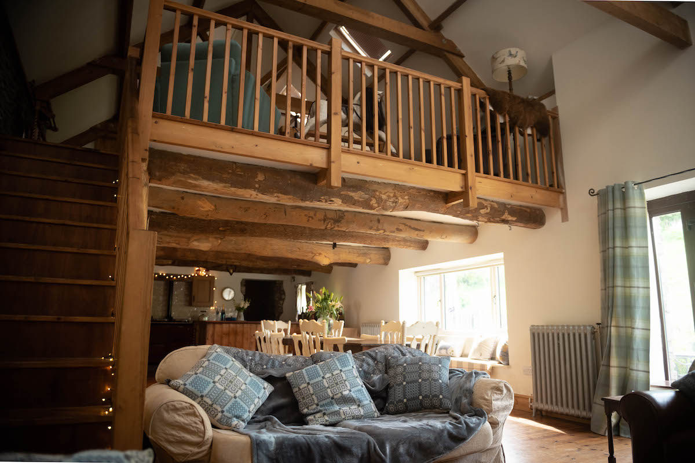

The perfect Welsh hideaway for couples looking to truly enjoy the local countryside! The Owl Barn is a historic farm building that has been sympathetically converted to create a cosy and romantic space amongst the rolling hills of South Wales.
The Owl Barn encourages true appreciation for the original architecture of this historic farm building and is carefully positioned across two floors via use of a mezzanine. With a solid wood staircase, original stone fireplace and cosy sofas, this space is the perfect haven for couples looking to escape into rural Wales. Come rain or shine, The Owl Barn is the perfect retreat.
Your stay with us features the quintessential Welsh farmhouse kitchen, complete with Aga and open plan dining space seating up to 14 people. It is truly a place for family to gather and feast upon wholesome dishes whipped up in our fully equipped kitchen area (including an electric double over with hob as well as the Aga). You can also look forward to a complimentary welcome pack with one or two delicous treats in to help you settle into your holiday.
The master bedroom in the The Owl Barn is the perfect couples hideaway after a busy day. With a solid wood four poster bed, ensuite bathroom and view down onto the fireplace this is the ultimate romantic indulgence. Feel free to choose from our collection of books to really kick-back, relax and enjoy your stay. Prefer to take your relaxation outside? Then you'll enjoy the private patio garden area, perfect for alfresco dining or that solitary morning cup of coffee in the fresh Welsh air.